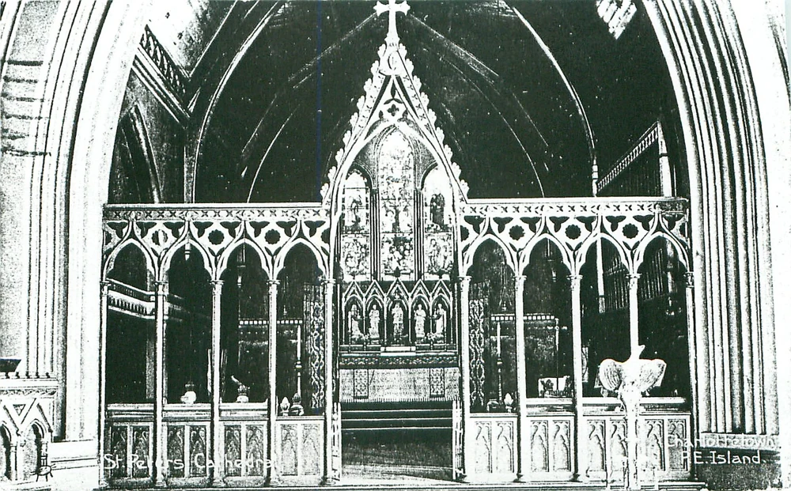
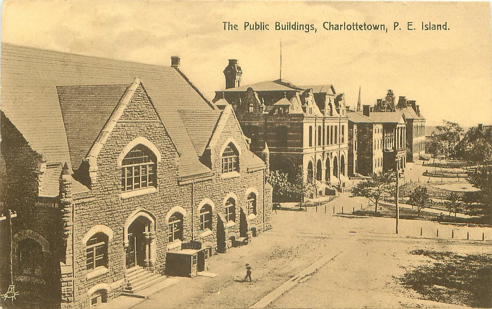
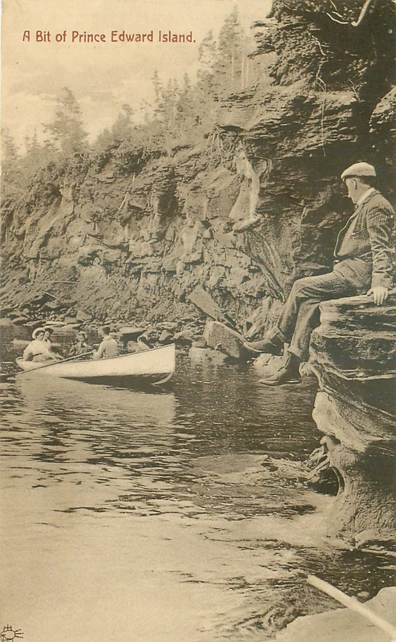
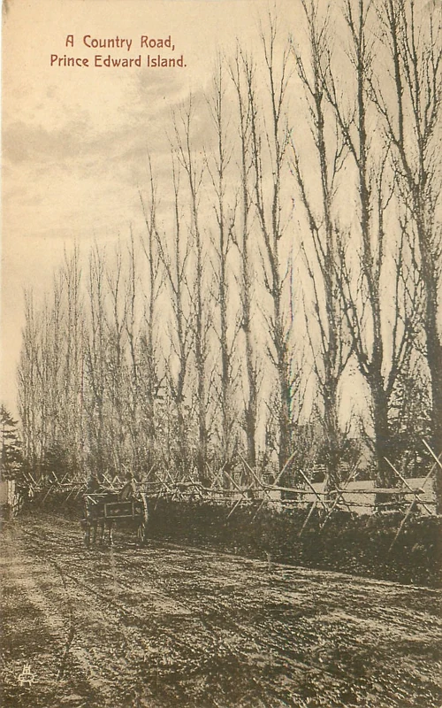
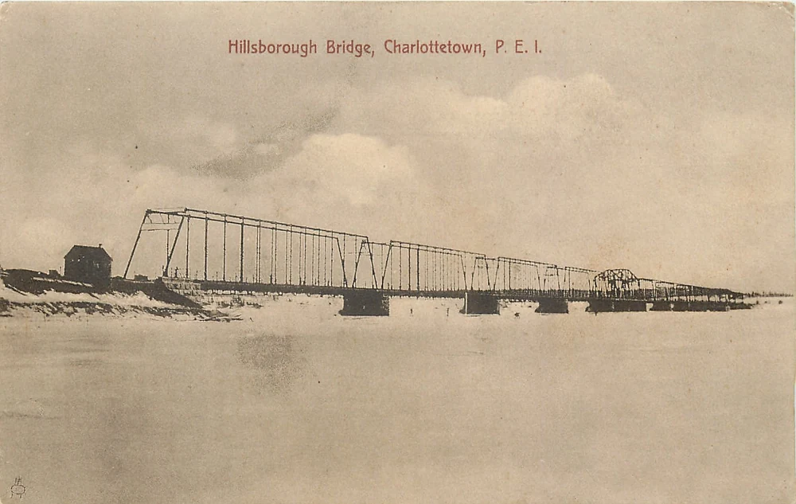
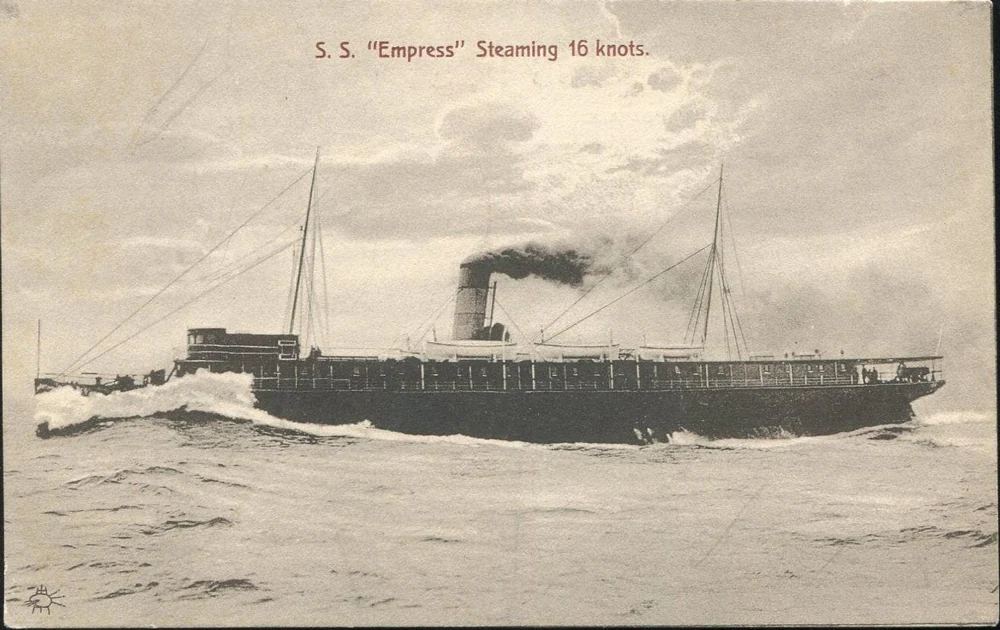
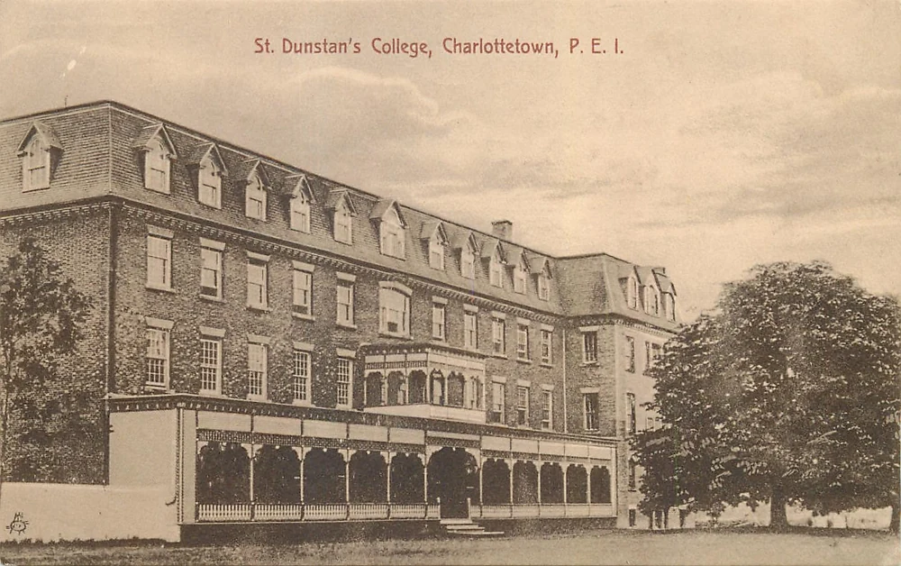
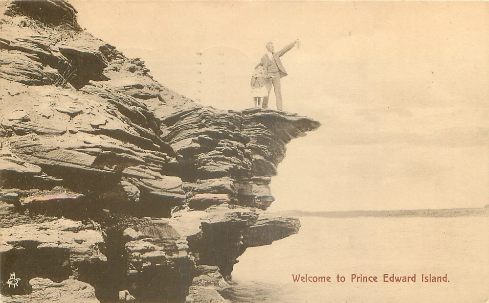
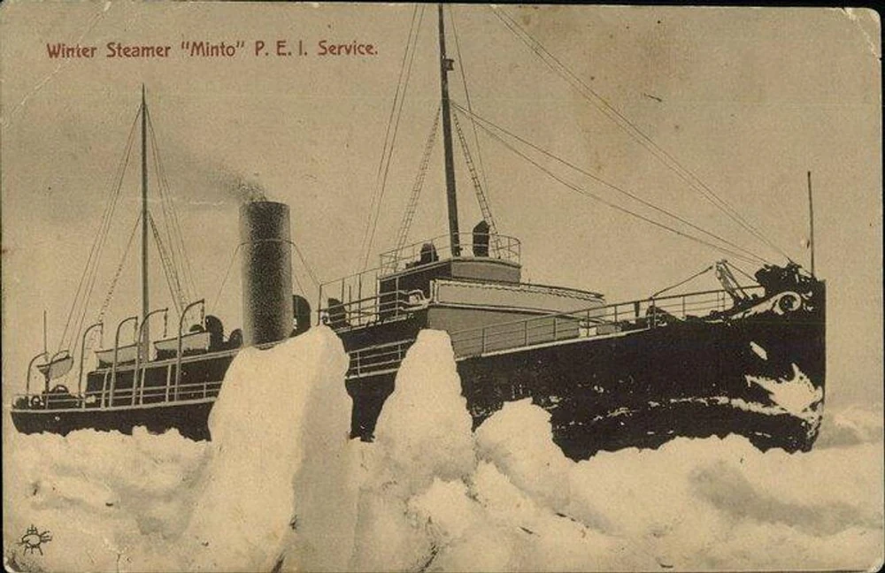
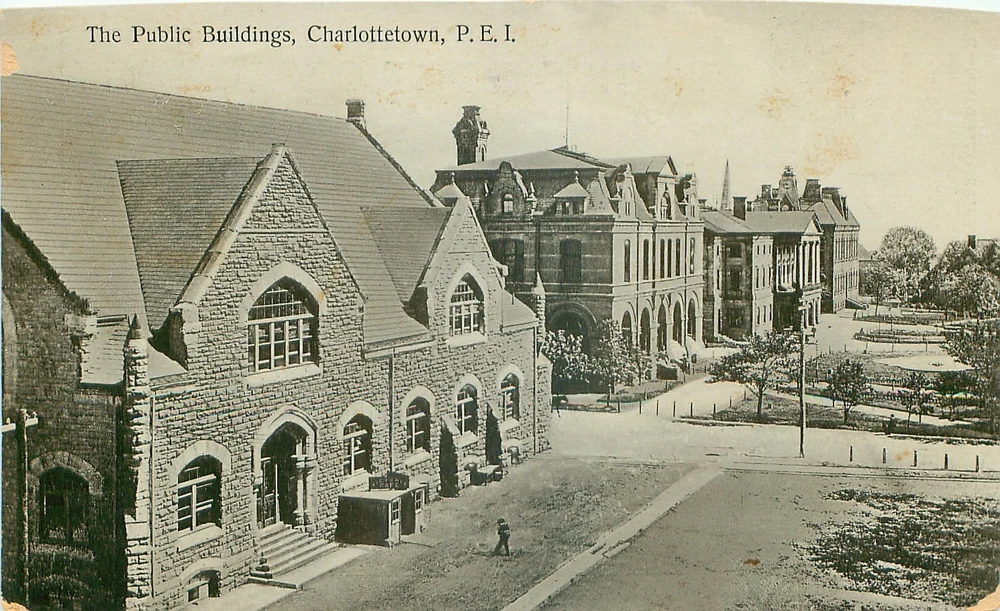

Raphael Tuck & Sons: the Island in several editions
Raphael Tuck & Sons gave Prince Edward Island a place in a much wider world of picture postcards. Here are the Island’s harbours and public buildings, a golf course, people camping and bathing, and steamers meeting the ice. The printed series names help us gather them into families: View Post Cards, Excelsior, Art Collotype, Sepia and Double Circle Phototype. The Excelsior colour cards also preserve a local shop’s name: the Boston 5 and 10 Cent Department Store in Charlottetown.
The albums combine cards in this collection with TuckDB’s illustrated catalogue. Reference pictures are credited below each image; clicking a collection card opens its full record and reverse. All twelve early View Series subjects and all twenty Excelsior 1012 subjects listed there are represented in the collection. The early View Series is shown separately in monochrome and colour. A collector’s message from 1905 names Bayer; the comparisons below follow several photographs into Tuck’s editions.
8 albums · 67 entries
The early View Series — black and white12 entries
Twelve Island views in monochrome, ranging from neutral grey to warm brown. Their backs call them Tuck’s View Post Cards; the sample below bears “Phototyped in Berlin” in its stamp box. Several photographs also appear in lightly coloured copies in the next album.
See a sample back


Other copies and editions (1)


Other copies and editions (1)

Other copies and editions (1)


Other copies and editions (1)
The early View Series — coloured4 entries
A light wash brings green to the golf links, warmth to the shore and pink flowers to the wreath around the soldiers’ monument. Four of the early View Series subjects are represented here in colour. On postcard 3470, mailed in November 1905, the sender describes the pictures as photographs by J. A. Bayer, “colored by hand”. Their story continues in the Bayer article.
See a sample back


1012 · Excelsior colour views20 entries
Twenty views bring colour to the city, the harbour and the surrounding countryside. The backs name Charlottetown’s Boston 5 and 10 Cent Department Store and identify Germany as the place of printing.
See a sample back


Other copies and editions (1)


Other copies and editions (1)


Other copies and editions (1)

Other copies and editions (1)

Other copies and editions (1)


Other copies and editions (1)

Other copies and editions (1)

Other copies and editions (1)


Other copies and editions (1)
1021 · Sepia scenes and church interiors4 entries
Warm sepia links the golf course and public buildings with views inside Charlottetown’s churches. The collection adds All Souls’ Chapel to the three examples listed by TuckDB.
See a sample back




1023 · Art Collotype20 entries
Red captions float above these finely textured monochrome scenes. City churches and streets share the series with farms, camping parties and the steamers serving the Island.
See a sample back




Other copies and editions (1)

Other copies and editions (1)









Other copies and editions (1)


1035 · Two views in a circle3 entries
Pairs of circular pictures offer a small tour of schools, the experimental farm and the two capes. The backs call the format Double Circle Phototype and credit processing in Saxony.
See a sample back


1036 · The Public Buildings1 entry
A separate Tuck series number accompanies this familiar Queen Square view. The example below comes from TuckDB.

Heraldry and a naval visitor3 entries
The Island also appears among Canada’s armorial bearings. Niobe is included as a companion to the Island’s naval-visit postcards; this painting belongs to Tuck’s wider warship range.
See a sample back


Other copies and editions (1)

The photographs behind the printed cards
A photographic postcard can bring the scene into sharper focus. Here are five photographs found both as real photo postcards and in Tuck editions. Two carry a photographer’s name; three are still awaiting one.
Bayer’s Prince of Wales College
Bayer’s name is printed on the back of the real photo card. Tuck’s Excelsior version uses the same photograph, with colour added and the tall foreground pole removed. The Bayer story follows this pair, three signed printed views and a collector’s 1905 message about Bayer’s photographs “colored by hand”.


Louson’s Earl Grey
“Louson Photo” appears beneath this view of the icebreaker, with people standing on the ice beside her. Those same people and the ship’s rigging lead across to Tuck’s colourful Excelsior card. The photograph also appears in the monochrome Art Collotype edition, 2649.


Three photographs still seeking a name
The two Queen Square photographs preserve the same people in the same places: a man walking away along the path in one, a little group around a bench in the other. The Northumberland’s hull, rigging and figures on deck carry across too. Their photographic cards have AZO backs, but these copies give us no photographer’s name.